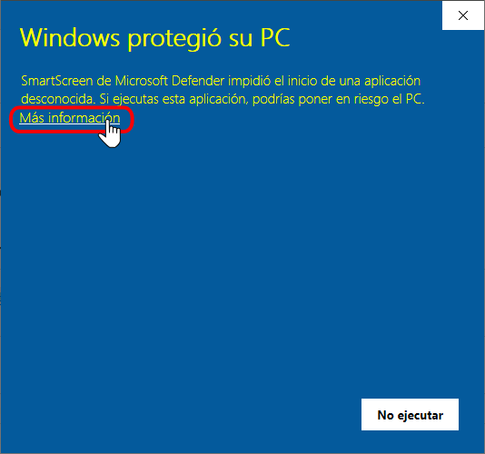
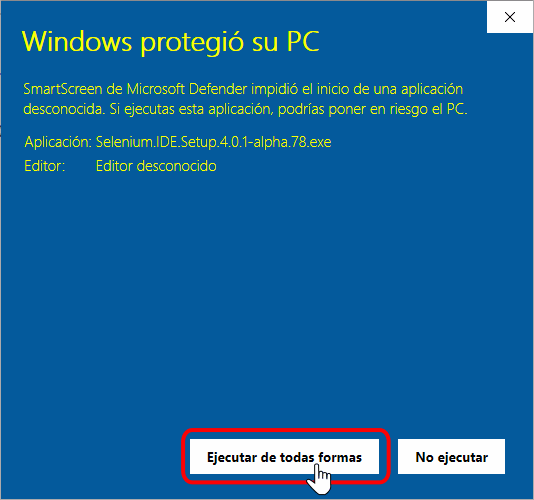
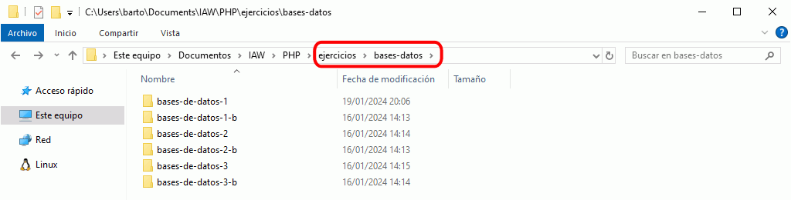
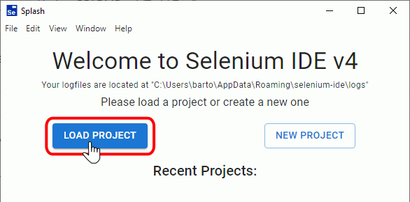
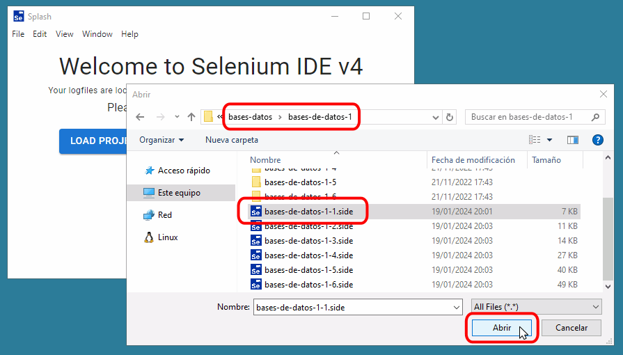
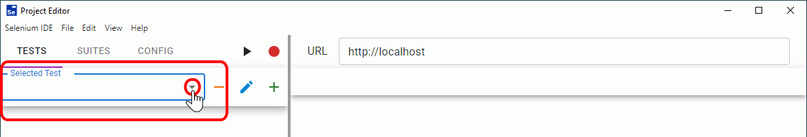
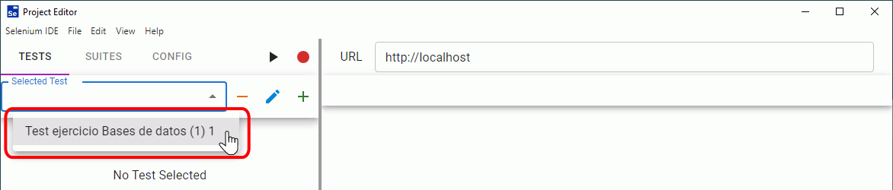
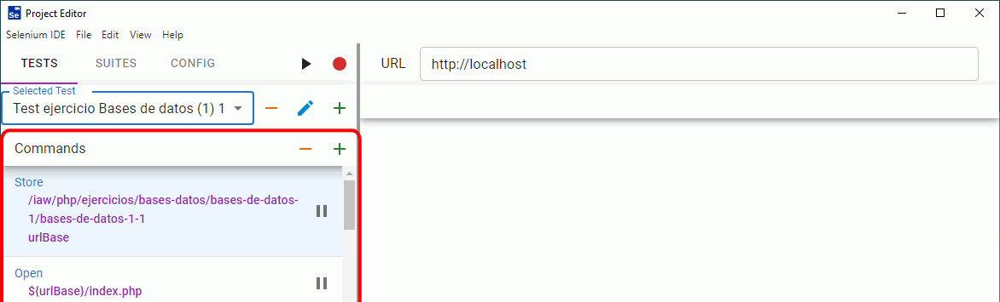
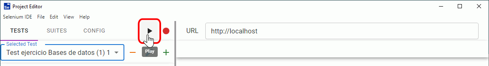
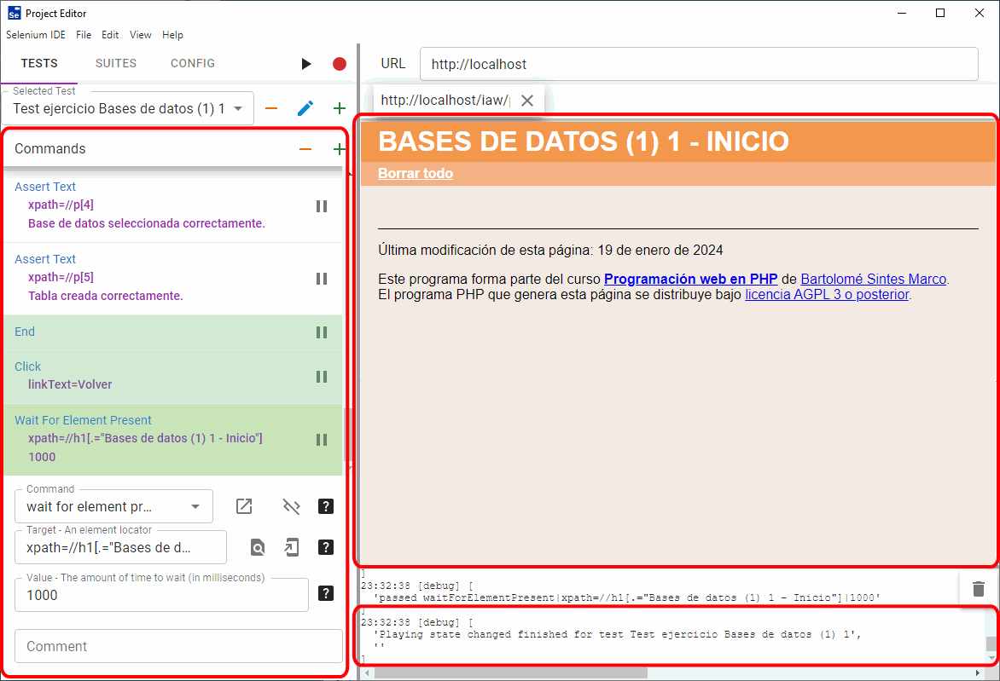

Selenium es un proyecto que desarrolla varias herramientas de automatización de navegadores. Una de ellas es Selenium IDE, una aplicación que permite grabar y reproducir las acciones realizadas por un usuario que visita una página web o interactúa con una aplicación web.
Selenium IDE ejecuta los tests realizando automáticamente acciones sobre la página web (haciendo clic en los enlaces o botones, rellenando campos de formularios, etc.) y comprobando si la página contiene o no los elementos esperados. En el momento que no se obtiene el resultado esperado, la ejecución del test se interrumpe y se indica el motivo del fallo. Una vez corregida la aplicación, se debe reiniciar la ejecución completa del test.
Existen dos versiones de Selenium IDE:
La versión "clásica" Selenium 3, que se instala como extensión de los navegadores Firefox o Google Chrome.. Desde 2022 no se publican nuevas versiones de estas extensiones.
La versión "moderna" Selenium 4, que funciona como aplicación independiente basada en Electron. Esta versión todavía se encuentra en desarrollo, pero ya es utilizable.
A partir del curso 2023/24, en estos apuntes se recomienda instalar la versión 4. Aunque se trate de una versión de desarrollo que presenta fallos, ejecuta los tests a mayor velocidad que la versión 3.
Por desgracia, Selenium IDE presenta algunos problemas de funcionamiento tanto en la versión 3 como en la 4. Por ejemplo, si se ejecuta varias veces un mismo test en una página con errores (errores que el programador va corrigiendo), es habitual que después de varias ejecuciones del test, Selenium IDE deje de responder. En ese caso es necesario cerrar Selenium, volver a abrirlo y reanudar la ejecución de los tests.
En este curso no se pretende aprender a usar Selenium IDE en profundidad, pero sí que se puede utilizar Selenium IDE para comprobar el funcionamiento de los ejercicios de Bases de Datos, ya que tanto las plantillas como las soluciones de los ejercicios de bases de datos incluyen ficheros .side.
Selenium IDE 4
Selenium IDE 4 es la versión más moderna de Selenium IDE, aunque todavía se encuentra en desarrollo. Se trata de una aplicación basada en Electron.
Al tratarse de versiones alpha, algunas versiones específicas presentan más problemas que otras. Mi recomendación es instalar la versión que aparezca en cdlibre, que corresponde a una versión que funciona adecuadamente (teniendo presente que se trata de una versión de desarrollo).
Si se quieren probar versiones posteriores a la incluida en cdlibre, se pueden descargar del repositorio de GitHub de Selenium IDE. Actualmente (enero de 2024), es necesario desinstalar manualmente la versión antigua antes de instalar una nueva versión.
Al instalar Selenium IDE 4 en Windows se muestra un aviso indicando que se trata de una aplicación desconocida, lo que ocurre a menudo con versiones de prueba de programas minoritarios. Para instalarla se debe hacer clic en "Más información" y después en "Ejecutar de todas formas".


Ficheros de pruebas .side
Selenium IDE trabaja con ficheros con la extensión .side. Los ficheros .side contienen los tests que ejecuta Selenium IDE. Los ficheros .side son ficheros de texto en formato json. Los comandos de Selenium que soportan la versión 4 y la versión 3 no son exactamente los mismos, por lo que un fichero preparado para una versión fallará al ejecutarse en la otra. Existe una utilidad llamada side-migrate que permite convertir el formato de Selenium IDE 3 en el de Selenium IDE 4.
Para comprobar que ha resuelto correctamente cada ejercicio, abra el fichero .side correspondiente con Selenium IDE y ejecute el test que contiene. Selenium IDE comprobará el correcto funcionamiento de la aplicación. El test puede comprobar el funcionamiento de las aplicaciones tanto si estas están configuradas para trabajar con SQLite como con MYSQL como base de datos, pero esta selección no la realiza Selenium IDE, se debe hacer modificando los ficheros config.php de cada aplicación.
Ubicación de la aplicación a testear
En los ficheros de prueba proporcionados en estos apuntes, la ubicación predeterminada es la indicada en la configuración recomendada del servidor en estos apuntes, es decir, que las páginas .php se encuentren accesibles a través de la dirección http://localhost/iaw/php/ejercicios/... En particular, se espera encontrar los ejercicios en la carpeta ejercicios/bases-datos.

Si los ejercicios a probar se ejecutan en una ubicación distinta, el camino hasta la aplicación debe modificarse en los ficheros .side. Para ello, hay que modificar el valor "target" de la variable "urlBase" (ese valor se encuentra en la línea 15 en la mayoría de ficheros) para que coincida con el camino existente en el ordenador del alumno.
Para testear los ejercicios de Bases de datos propuestos en estos apuntes, siga estos pasos:
Abra Selenium IDE 4. Se mostrará la pantalla inicial. Haga clic en el botón "Load project":

Se abrirá una ventana de selección de archivos. Elija el fichero de pruebas .side correspondiente al ejercicio que quiera testear.

Se abrirá entonces la ventana de Selenium IDE, vacía (si es la primera vez que cargamos un proyecto). Para elegir el test, haga clic en el triángulo del desplegable "Selected Test"":

Se mostrarán los tests disponibles en el proyecto cargado. En los ficheros .side incluidos en las plantillas de los ejercicios de estos apuntes se incluye un único test, que corresponde al nombre del ejercicio y testea la aplicación completa. Haga clic en él para seleccionarlo:

Una vez seleccionado, en la zona de Comandos de la ventana se mostrarán los primeros comandos del test:

Para ejecutar el test, haga clic en el triángulo negro "Play":

En la zona de navegador, se ejecutará el test. Los comandos ejecutados se irán mostrando en la zona de Comandos, de color verde si tienen éxito y de color rojo si fallan. Los comandos no ejecutados se mostrarán en blanco. En los proyectos suministrados estos apuntes, los comandos que no se ejecutan corresponden a comandos de prueba de la base de datos no utilizada (SQLite o MariaDB). En caso de que el test se complete correctamente, en la zona de Depuración inferior se mostrará el mensaje "Playing state changed finished for test":

Bugs de Selenium 4
Estos son algunos de los bugs de Selenium 4:
Antes de instalar una nueva versión de Selenium IDE 4, debe desinstalarse manualmente la versión anterior, porque el instalador no es capaz de desinstalar la versión anterior. [ref GitHub issue #1754]
Una vez iniciado un test, si se desplaza la ventana de Selenium IDE 4, la ventana de reproducción permanece fija en la pantalla, aunque operativa. Hasta que se corrija este problema, la solución es cerrar la ventana de reproducción (con el atajo Ctrl + P). [ref GitHub issue #1757]